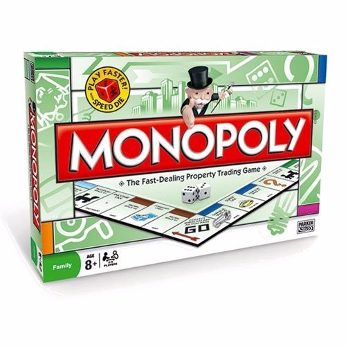

ANTES
Un juego creado con la función de servir como herramienta para enseñar las teorías acerca de la justicia social y económica extraídas del estudio títulado Progreso y Miseria de Henry George.

MONOPOLY
Comercializado por primera vez en el año de 1936.
A lo largo de 80 años, el juego ha sufrido una notable evolución. sus múltiples ediciones y sus tantas versiones han dado pie a que se cambiara desde la caja que lo contiene hasta los elementos que lo componen. Logrando así, mantenerse como el favorito a través de las décadas.
AHORA
Con los años, la finalidad del juego cambió para solo disfrutar un buen rato, negociando propiedades y hasta haciendo uso de medios electrónicos para todas las transacciones que requiere el juego.
